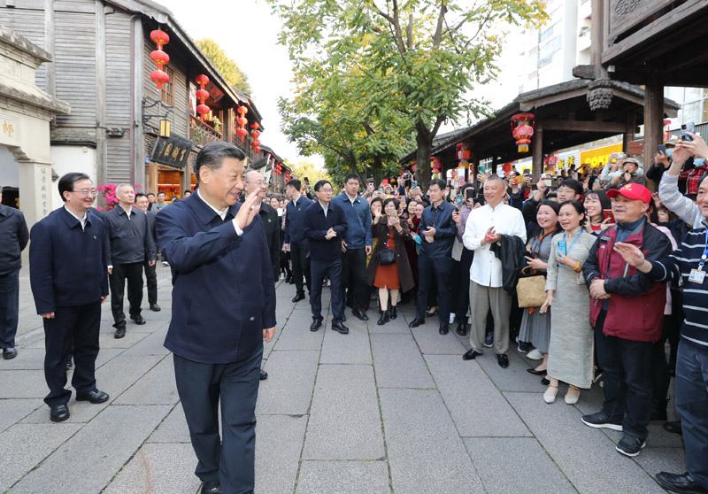
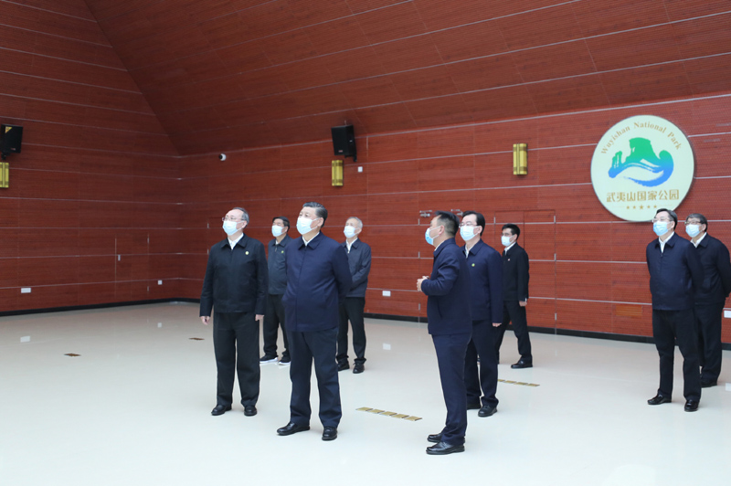
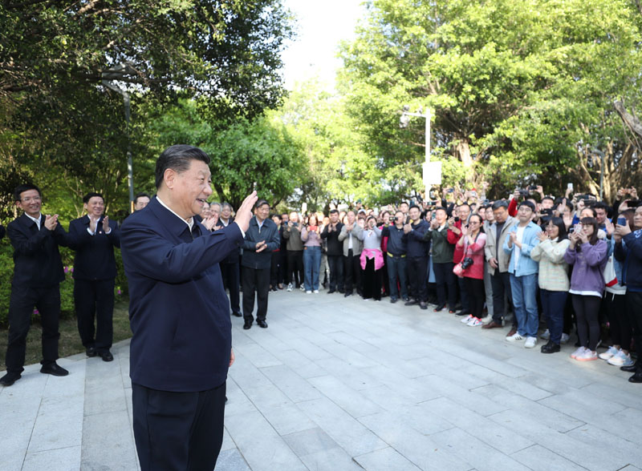
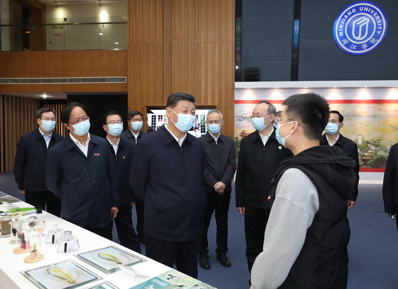

习近平在福建考察时强调
在服务和融入新发展格局上展现更大作为
奋力谱写全面建设社会主义现代化国家福建篇章
3月22日至25日，中共中央总书记、国家主席、中央军委主席习近平在福建考察。这是22日下午，习近平在南平武夷山市星村镇燕子窠生态茶园，同科技特派员、茶农亲切交流，了解当地茶产业发展情况。新华社记者 燕雁 摄
中共中央总书记、国家主席、中央军委主席习近平近日在福建考察时强调，要落实党中央决策部署，坚持稳中求进工作总基调，立足新发展阶段、贯彻新发展理念、构建新发展格局，深化供给侧结构性改革，扩大改革开放，推动科技创新，统筹疫情防控和经济社会发展，统筹发展和安全，在加快建设现代化经济体系上取得更大进步，在服务和融入新发展格局上展现更大作为，在探索海峡两岸融合发展新路上迈出更大步伐，在创造高品质生活上实现更大突破，奋力谱写全面建设社会主义现代化国家福建篇章。
3月22日至25日，中共中央总书记、国家主席、中央军委主席习近平在福建考察。这是23日上午，习近平在三明沙县总医院住院楼一层大厅，同医护人员、患者亲切交流。新华社记者 王晔 摄

3月22日至25日，中共中央总书记、国家主席、中央军委主席习近平在福建考察。这是24日下午，习近平在福州三坊七巷历史文化街区考察时，向游客和市民招手致意。新华社记者 鞠鹏 摄
仲春时节，八闽大地一派勃勃生机。3月22日至25日，习近平在福建省委书记尹力、省长王宁陪同下，先后来到南平、三明、福州等地，深入国家公园、生态茶园、文物保护单位、医院、农村、企业、学校等，就贯彻党的十九届五中全会精神、推动“十四五”开好局起好步、统筹推进常态化疫情防控和经济社会发展等进行调研。

3月22日至25日，中共中央总书记、国家主席、中央军委主席习近平在福建考察。这是22日下午，习近平在南平武夷山国家公园智慧管理中心，察看智慧管理平台运行情况。新华社记者 鞠鹏 摄
3月22日至25日，中共中央总书记、国家主席、中央军委主席习近平在福建考察。这是22日下午，习近平在南平武夷山国家公园智慧管理中心同游客亲切交流。新华社记者 王晔 摄
武夷山国家公园是首批国家公园体制试点之一。22日下午，习近平来到公园智慧管理中心，察看智慧管理平台运行情况。该中心综合运用智能化技术，实现了对公园“天地空”全方位、全天候监测管理，提升了生态保护能力。习近平对生态文明建设高度重视，在福建工作期间就推动了长汀水土流失治理、木兰溪防洪工程等重大生态保护工程，并于2000年推动福建率先在全国探索生态省建设。经过长期努力，福建生态文明建设取得了积极成效。习近平指出，建立以国家公园为主体的自然保护地体系，目的就是按照山水林田湖草是一个生命共同体的理念，保持自然生态系统的原真性和完整性，保护生物多样性。要坚持生态保护第一，统筹保护和发展，有序推进生态移民，适度发展生态旅游，实现生态保护、绿色发展、民生改善相统一。
3月22日至25日，中共中央总书记、国家主席、中央军委主席习近平在福建考察。这是22日下午，习近平在南平武夷山市星村镇燕子窠生态茶园，察看春茶长势，了解当地茶产业发展情况。新华社记者 鞠鹏 摄

3月22日至25日，中共中央总书记、国家主席、中央军委主席习近平在福建考察。这是22日下午，习近平在南平武夷山市星村镇燕子窠生态茶园，察看春茶长势，了解当地茶产业发展情况。新华社记者 王晔 摄
3月22日至25日，中共中央总书记、国家主席、中央军委主席习近平在福建考察。这是22日下午，习近平在南平武夷山市星村镇燕子窠生态茶园，同科技特派员、茶农亲切交流，了解当地茶产业发展情况。新华社记者 鞠鹏 摄
武夷山是乌龙茶、红茶的发源地。习近平来到星村镇燕子窠生态茶园，察看春茶长势，了解当地茶产业发展情况。习近平强调，要统筹做好茶文化、茶产业、茶科技这篇大文章，坚持绿色发展方向，强化品牌意识，优化营销流通环境，打牢乡村振兴的产业基础。要深入推进科技特派员制度，让广大科技特派员把论文写在田野大地上。

3月22日至25日，中共中央总书记、国家主席、中央军委主席习近平在福建考察。这是22日下午，习近平在南平武夷山朱熹园，了解朱熹生平及理学研究等情况。新华社记者 鞠鹏 摄
3月22日至25日，中共中央总书记、国家主席、中央军委主席习近平在福建考察。这是22日下午，习近平在南平武夷山朱熹园，了解朱熹生平及理学研究等情况。新华社记者 鞠鹏 摄
3月22日至25日，中共中央总书记、国家主席、中央军委主席习近平在福建考察。这是22日下午，习近平在南平武夷山朱熹园考察时，向游客招手致意。新华社记者 王晔 摄
3月22日至25日，中共中央总书记、国家主席、中央军委主席习近平在福建考察。这是23日上午，习近平在三明沙县总医院住院楼一层大厅，听取医改情况介绍。新华社记者 王晔 摄

3月22日至25日，中共中央总书记、国家主席、中央军委主席习近平在福建考察。这是23日上午，习近平在三明沙县总医院住院楼一层大厅，听取医改情况介绍。新华社记者 王晔 摄
3月22日至25日，中共中央总书记、国家主席、中央军委主席习近平在福建考察。这是23日上午，习近平在三明沙县总医院住院楼一层大厅，听取医改情况介绍。新华社记者 王晔 摄
3月22日至25日，中共中央总书记、国家主席、中央军委主席习近平在福建考察。这是23日上午，习近平在三明沙县考察时向群众挥手致意。新华社记者 王晔 摄
离开茶园，习近平乘竹筏沿九曲溪察看生态环境保护情况和自然景观。在九曲溪畔的朱熹园，习近平详细了解朱熹生平及理学研究等情况。他指出，要推动中华优秀传统文化创造性转化、创新性发展，以时代精神激活中华优秀传统文化的生命力。要把坚持马克思主义同弘扬中华优秀传统文化有机结合起来，坚定不移走中国特色社会主义道路。
近年来，三明医改以药品耗材治理改革为突破口，坚持医药、医保、医疗改革联动，为全国医改探索了宝贵经验。2016年2月，习近平主持中央全面深化改革领导小组会议，听取了三明医改情况汇报，要求总结推广改革经验。23日上午，习近平来到三明市沙县总医院，在住院楼一层大厅听取医改情况介绍，向医护人员、患者了解医改惠民情况。习近平强调，人民健康是社会主义现代化的重要标志。三明医改体现了人民至上、敢为人先，其经验值得各地因地制宜借鉴。要继续深化医药卫生体制改革，均衡布局优质医疗资源，改善基层基础设施条件，为人民健康提供可靠保障。
3月22日至25日，中共中央总书记、国家主席、中央军委主席习近平在福建考察。这是23日下午，习近平在三明沙县夏茂镇俞邦村考察时，向村民挥手致意。新华社记者 王晔 摄
3月22日至25日，中共中央总书记、国家主席、中央军委主席习近平在福建考察。这是23日下午，习近平在三明沙县夏茂镇俞邦村考察时，同村民亲切交流。新华社记者 王晔 摄
3月22日至25日，中共中央总书记、国家主席、中央军委主席习近平在福建考察。这是23日下午，习近平在三明沙县夏茂镇俞邦村考察时，同村民亲切交流。新华社记者 王晔 摄
福建发扬习近平在宁德工作时提出的弱鸟先飞、滴水穿石精神，下大气力抓摆脱贫困。经过30多年努力，福建全省同全国一道，彻底消除了绝对贫困。23日下午，习近平来到革命老区村——沙县夏茂镇俞邦村，在小吃摊边、特产店里、村民家门前，同乡亲们亲切交谈，详细了解沙县小吃发展现状和前景。习近平指出，沙县人走南闯北，把沙县小吃打造成了富民特色产业。乡村要振兴，因地制宜选择富民产业是关键。要抓住机遇、开阔眼界，适应市场需求，继续探索创新，在创造美好生活新征程上再领风骚。
3月22日至25日，中共中央总书记、国家主席、中央军委主席习近平在福建考察。这是23日下午，习近平在三明沙县夏茂镇俞邦村考察时，在小吃摊边同乡亲们亲切交谈。新华社记者 王晔 摄
3月22日至25日，中共中央总书记、国家主席、中央军委主席习近平在福建考察。这是23日下午，习近平在三明沙县夏茂镇俞邦村考察时，在小吃摊边同乡亲们亲切交谈。新华社记者 鞠鹏 摄
3月22日至25日，中共中央总书记、国家主席、中央军委主席习近平在福建考察。这是23日下午，习近平在三明沙县夏茂镇俞邦村考察时，同乡亲们亲切交流。新华社记者 王晔 摄
习近平在福建工作时推动开展了集体林权制度改革，试行“分山到户、均林到人”，实现“山定权、树定根、人定心”。在沙县农村产权交易中心，习近平听取集体林权制度改革介绍，向办事群众和工作人员了解集体林地经营权流转交易、不动产登记等情况。习近平指出，三明集体林权制度改革探索很有意义，要坚持正确改革方向，尊重群众首创精神，积极稳妥推进集体林权制度创新，探索完善生态产品价值实现机制，力争实现新的突破。
3月22日至25日，中共中央总书记、国家主席、中央军委主席习近平在福建考察。这是23日下午，习近平在三明沙县农村产权交易中心考察。新华社记者 王晔 摄
3月22日至25日，中共中央总书记、国家主席、中央军委主席习近平在福建考察。这是23日下午，习近平在三明沙县农村产权交易中心考察。新华社记者 王晔 摄
3月22日至25日，中共中央总书记、国家主席、中央军委主席习近平在福建考察。这是23日下午，习近平在三明沙县农村产权交易中心考察时，同工作人员、办事群众等亲切交流。新华社记者 王晔 摄
习近平24日在福州考察调研。在福州工作期间习近平领导实施了福州市“3820”工程，勾画跨世纪福州现代化建设宏伟蓝图。在福山郊野公园，习近平乘坐电瓶车实地了解郊野福道风貌，他登上观景平台，远眺福州新貌，听取城市生态公园规划建设、城市水系综合治理情况汇报。市民们看到总书记来了，争相围拢过来。习近平指出，建设好管理好一座城市，要把菜篮子、人居环境、城市空间等工作放到重要位置切实抓好。福州是有福之州，生态条件得天独厚，希望继续把这座海滨城市、山水城市建设得更加美好，更好造福人民群众。
3月22日至25日，中共中央总书记、国家主席、中央军委主席习近平在福建考察。这是24日下午，习近平在福州福山郊野公园乘坐电瓶车实地了解郊野福道风貌。新华社记者 鞠鹏 摄
3月22日至25日，中共中央总书记、国家主席、中央军委主席习近平在福建考察。这是24日下午，习近平在福州福山郊野公园观景平台，听取城市生态公园规划建设、城市水系综合治理情况汇报。新华社记者 鞠鹏 摄
3月22日至25日，中共中央总书记、国家主席、中央军委主席习近平在福建考察。这是24日下午，习近平在福州福山郊野公园观景平台，听取城市生态公园规划建设、城市水系综合治理情况汇报。新华社记者 鞠鹏 摄

3月22日至25日，中共中央总书记、国家主席、中央军委主席习近平在福建考察。这是24日下午，习近平在福州福山郊野公园考察时，向市民们招手致意。新华社记者 鞠鹏 摄
福州三坊七巷历史文化街区保留了唐宋遗留下来的坊巷格局和大量明清古建筑。早在1991年，习近平在福州工作期间就召开文物工作现场办公会，推动制定福州历史文化名城保护管理条例和保护规划，有力促进了城市历史文化传承保护工作。习近平听取福州古厝和三坊七巷保护修复等情况介绍，步行察看南后街、郎官巷，参观严复故居，向游客和市民频频招手致意。习近平强调，保护好传统街区，保护好古建筑，保护好文物，就是保存了城市的历史和文脉。对待古建筑、老宅子、老街区要有珍爱之心、尊崇之心。
3月22日至25日，中共中央总书记、国家主席、中央军委主席习近平在福建考察。这是24日下午，习近平在福州三坊七巷历史文化街区步行察看南后街。新华社记者 王晔 摄
3月22日至25日，中共中央总书记、国家主席、中央军委主席习近平在福建考察。这是24日下午，习近平在福州三坊七巷历史文化街区步行察看郎官巷。新华社记者 王晔 摄
3月22日至25日，中共中央总书记、国家主席、中央军委主席习近平在福建考察。这是24日下午，习近平在福州三坊七巷历史文化街区参观严复故居。新华社记者 鞠鹏 摄
3月22日至25日，中共中央总书记、国家主席、中央军委主席习近平在福建考察。这是24日下午，习近平在福州三坊七巷历史文化街区考察时，向游客和市民招手致意。新华社记者 燕雁 摄
3月22日至25日，中共中央总书记、国家主席、中央军委主席习近平在福建考察。这是24日下午，习近平在福州三坊七巷历史文化街区考察时，向游客和市民招手致意。新华社记者 燕雁 摄
福建福光股份有限公司是光学镜头重要制造商。习近平步入公司展厅，察看产品展示，询问企业技术创新和生产销售情况。超精密车间内，企业员工向总书记展示了产品生产工艺。习近平强调，我们国家进入科技发展第一方阵要靠创新，一味跟跑是行不通的，必须加快科技自立自强步伐。要坚持创新在现代化建设全局中的核心地位，把创新作为一项国策，积极鼓励支持创新。创新不问“出身”，只要谁能为国家作贡献就支持谁。
3月22日至25日，中共中央总书记、国家主席、中央军委主席习近平在福建考察。这是24日下午，习近平在福州福建福光股份有限公司考察。新华社记者 鞠鹏 摄
3月22日至25日，中共中央总书记、国家主席、中央军委主席习近平在福建考察。这是24日下午，习近平在福州福建福光股份有限公司考察。新华社记者 王晔 摄
3月22日至25日，中共中央总书记、国家主席、中央军委主席习近平在福建考察。这是24日下午，习近平在福州福建福光股份有限公司考察时，同企业职工亲切交流。新华社记者 王晔 摄
3月22日至25日，中共中央总书记、国家主席、中央军委主席习近平在福建考察。这是24日下午，习近平在福州福建福光股份有限公司考察时，同企业员工亲切交流。新华社记者 鞠鹏 摄
25日上午，习近平来到闽江学院考察调研。闽江学院前身是福州师范高等专科学校和闽江职业大学。在福州工作期间，习近平曾兼任闽江职业大学校长6年时间，提出的“不求最大、但求最优、但求适应社会需要”的办学理念影响深远。2018年10月，习近平曾就闽江学院成立60周年致贺信。在闽江学院校史和应用型办学成果展示厅，习近平肯定学院在坚持应用型办学、深化产教融合等方面取得的成绩。习近平指出，要把立德树人作为根本任务，坚持应用技术型办学方向，适应社会需要设置专业、打好基础，培养德智体美劳全面发展的社会主义建设者和接班人。
3月22日至25日，中共中央总书记、国家主席、中央军委主席习近平在福建考察。这是25日上午，习近平在福州闽江学院，参观校史和应用型办学成果展示。新华社记者 王晔 摄

3月22日至25日，中共中央总书记、国家主席、中央军委主席习近平在福建考察。这是25日上午，习近平在福州闽江学院，参观校史和应用型办学成果展示。新华社记者 王晔 摄
校园广场上师生们高喊“总书记好”、“习校长好”，习近平向大家挥手致意。习近平强调，实现第二个百年奋斗目标，实现中华民族伟大复兴，青年一代责任在肩。希望同学们树立远大理想、热爱伟大祖国、担当时代责任、勇于砥砺奋斗、练就过硬本领、锤炼品德修为，努力成为对社会有用的人、道德高尚的人，积极投身全面建设社会主义现代化国家的伟大事业。
3月22日至25日，中共中央总书记、国家主席、中央军委主席习近平在福建考察。这是25日上午，习近平在福州闽江学院考察时，同师生们亲切交流。新华社记者 王晔 摄
3月22日至25日，中共中央总书记、国家主席、中央军委主席习近平在福建考察。这是25日上午，习近平在福州闽江学院考察时，向师生们挥手致意。新华社记者 王晔 摄
当天上午，习近平听取了福建省委和省政府工作汇报，对福建各项工作取得的成绩给予肯定，希望福建在全方位推动高质量发展上取得新成效。
习近平强调，推动高质量发展，首先要完整、准确、全面贯彻新发展理念。新发展理念和高质量发展是内在统一的，高质量发展就是体现新发展理念的发展。要坚持系统观念，找准在服务和融入构建新发展格局中的定位，优化提升产业结构，加快推动数字产业化、产业数字化。要加大创新支持力度，优化创新生态环境，激发创新创造活力。要深度融入共建“一带一路”，办好自由贸易试验区，建设更高水平开放型经济新体制。要突出以通促融、以惠促融、以情促融，勇于探索海峡两岸融合发展新路。
3月22日至25日，中共中央总书记、国家主席、中央军委主席习近平在福建考察。这是22日下午，习近平在南平武夷山市星村镇燕子窠生态茶园，察看春茶长势，了解当地茶产业发展情况。新华社记者 王晔 摄
3月22日至25日，中共中央总书记、国家主席、中央军委主席习近平在福建考察。这是23日下午，习近平在三明沙县夏茂镇俞邦村考察时，同村民亲切交流。新华社记者 鞠鹏 摄
习近平指出，要加快推进乡村振兴，立足农业资源多样性和气候适宜优势，培育特色优势产业。要以实施乡村建设行动为抓手，改善农村人居环境，建设宜居宜业美丽乡村。要推进老区苏区全面振兴，倾力支持老区苏区特色产业提升、基础设施建设和公共服务保障等。要把碳达峰、碳中和纳入生态省建设布局，科学制定时间表、路线图，建设人与自然和谐共生的现代化。
3月22日至25日，中共中央总书记、国家主席、中央军委主席习近平在福建考察。这是24日下午，习近平在福州福山郊野公园观景平台，听取城市生态公园规划建设、城市水系综合治理情况汇报。新华社记者 王晔 摄
3月22日至25日，中共中央总书记、国家主席、中央军委主席习近平在福建考察。这是24日下午，习近平在福州福山郊野公园观景平台，听取城市生态公园规划建设、城市水系综合治理情况汇报。新华社记者 王晔 摄
3月22日至25日，中共中央总书记、国家主席、中央军委主席习近平在福建考察。这是24日下午，习近平在福州福山郊野公园考察时，同市民们亲切交流。新华社记者 王晔 摄
习近平强调，要着力提高人民生活品质，拓展居民收入增长的渠道，统筹做好高校毕业生、农民工、退役军人等重点群体就业。要全面贯彻党的教育方针，落实立德树人根本任务，坚持教育公益性原则，深化教育改革，办好人民满意的教育。要把保障人民健康放在优先发展的战略位置，织牢公共卫生防护网，推动公立医院高质量发展。要慎终如始做好“外防输入、内防反弹”的工作。要有效遏制重特大安全生产事故，推动扫黑除恶常态化。
3月22日至25日，中共中央总书记、国家主席、中央军委主席习近平在福建考察。这是25日上午，习近平在福州闽江学院考察时，同师生们亲切交流。新华社记者 鞠鹏 摄
3月22日至25日，中共中央总书记、国家主席、中央军委主席习近平在福建考察。这是25日上午，习近平在福州闽江学院考察时，向师生们挥手致意。新华社记者 燕雁 摄
习近平指出，福建是革命老区，党史事件多、红色资源多、革命先辈多，开展党史学习教育具有独特优势。要在党史学习教育中做到学史明理，明理是增信、崇德、力行的前提。要从党的辉煌成就、艰辛历程、历史经验、优良传统中深刻领悟中国共产党为什么能、马克思主义为什么行、中国特色社会主义为什么好等道理，弄清楚其中的历史逻辑、理论逻辑、实践逻辑。要深刻领悟坚持中国共产党领导的历史必然性，坚定对党的领导的自信。要深刻领悟马克思主义及其中国化创新理论的真理性，增强自觉贯彻落实党的创新理论的坚定性。要深刻领悟中国特色社会主义道路的正确性，坚定不移走中国特色社会主义这条唯一正确的道路。要把各领域基层党组织建设成为坚强战斗堡垒。要不断提高不敢腐、不能腐、不想腐的综合功效，持续巩固发展良好的政治生态。
丁薛祥、刘鹤、陈希、何立峰和中央有关部门负责同志陪同考察。
来源：共产党员网